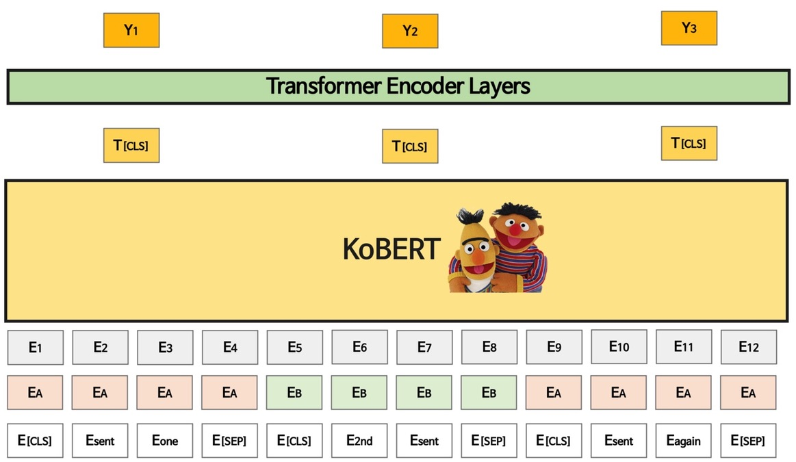

Presumm
1. Overview
Presumm은 Bertsum의 저자가 발표한 후속 논문으로, Extractive summarization을 목적으로 한 Bertsum을 활용하여 Extractive summarization model과 Abstractive summarization이 모두 가능한 두가지 모델을 제안한다.
1) Presumm for Extractive summarization
-
기존의 BERT input과 다르게 모든 문장 앞뒤에 [CLS], [SEP] token을 배치함
-
한국어 모델을 구현하기위해 SKT에서 공개한 KoBERT 모델을 활용함
- KoBERT의 아웃풋 벡터를 모두 사용하지 않고 CLS token의 Top vector만 사용하여 Transformer Encoder Layer를 통과함 (사용한 레이어 갯수는 2개)

2) Presumm for Abstractive summarization
- Encoder는 KoBERT 혹은 Pretrained Extractive Summarization Model을 사용하고, Decoder는 Transformer Decoder를 사용하는 모델 구조
- Encoder의 Input은 Extractive model과 동일하게 하나의 문장 앞뒤에 [CLS], [SEP] token을 붙임
- Decoder는 별도의 Special token을 사용하지 않지만, 문장 앞뒤에 [BOS], [EOS]를 더하여 Document의 시작과 끝을 표시함
- Extractive model과 다르게 Document 전체 벡터를 모두 활용하여 Decoder에 넣어줌
- Beam search를 활용하여 최종 Output vocab을 찾아냄
2. Code scheme
Presumm
├── requirements.txt
├── utils
│ ├── dataset.py
│ ├── greedy.py
│ ├── modeling_utils.py
│ └── preprocess.py
├── ext
│ ├── modeling_bertext.py
│ ├── ext_train.py
│ ├── ext_trainer.py
│ ├── inference.py
│ └── ext_test.py
├── abs
│ ├── modeling_bertabs.py
│ ├── abs_train.py
│ ├── abs_trainer.py
│ ├── abs_test.py
│ ├── abs_generate.py
│ └── train.sh
3. Utils
1) dataset.py
Class Bertsum_Dataset
data_path : str, max_len = 512 , train = True, mode = 'ext', language = 'kor'
Bertsum에 사용될 데이터셋 class이며, Extractive summarization과 Abstract summarization 모두 적용 가능한 함수로 mode 를 정확히 바꾸어주어야한다. 또한 학습/추론 여부에 따라 Train option을 바꾸어서 사용해야하며 Dataloader를 사용할때 Dataset 옵션에 해당 class를 import하고 사용해야한다.
- Parameters
- data_path (
str, require) - max_len (
int,optional, defaults to 512 ) - train (
bool, optional, defaults to True ) - mode (
str) if string,ext,absare supported - language (
str, defaults to 'kor')
def Collate
batch
Collate 함수는 보통 Data Loader의 배치 내 데이터들이 길이나 구성을 같게 해주는 함수이다. 해당 Collate Function이 진행하는 처리는 데이터간 길이를 맞춰주기 위해 패딩을 실시해야 하는데 문장이 Max Length를 넘어갈 경우, 해당 Max Length 이하의 마지막 [CLS] Token의 위치를 찾아 문장 패딩을 진행한다.
def src_add_pad
token_ids, token_type
token_ids는 전체 document를 token화 한 후 vocab에 따라 id로 변경한 것을 의미하며, token_type은 document의 문장을 구별해주는 식별자이다. 해당 함수는 source document를 max_length에 따라 padding을 진행해주는 함수
def tgt_add_pad
token_ids
해당 함수는 target document를 max_length에 따라 padding을 진행해주는 함수
def add_special_token
token_ids
해당 함수는 source document에서 한 문장마다 special token인 [CLS]와 [SEP]로 감싸주는 함수
def add_sentence_token
token_ids
해당 함수는 target document 전체를 [BOS], [EOS]로 감싸주는 역할을 하며 문장단위가 아니라 전체 document를 감싸주는 함수
def idx2mask
token_ids
padding index로 이루어진 sequence를 mask로 바꾸어주는 함수
def get_token_type_ids
src_token_padded
source document의 seuquence가 존재할 때 문장 단위로 구별하기 위해 type id를 부여하는 함수
def get_cls_index
src_token_padded
Extractive summarization에서만 사용되는 함수로 cls token의 위치를 알아내기위해 cls index 위치를 찾는 함수
def _ getitem _
idx
Pytorch Dataset을 만들기위한 함수로, 학습과 추론시 batch 단위로 데이터를 불러올 수 있도록 구성되어있음
1) Extractive Summarization Output (Train/Test동일)
batch = [
torch.tensor(src_doc_padded),
torch.tensor(src_doc_mask),
torch.tensor(src_doc_type_padded),
torch.tensor(cls_index),
torch.tensor(ext_labels),
src_summary,
tgt_doc_summary
]
아래 세 종류(src / cls, ext / summary)의 데이터는 BERT의 input으로 활용
- src_doc_padded : padding을 완료한 source document의 sequence
- src_doc_mask : source document의 mask sequence
-
src_doc_type_padded : source document 문장의 token type sequence
-
cls_index : source document에서 cls token의 index
-
ext_labels : Extractive summarization label
-
src_summary, tgt_doc_summary : 원본 텍스트
2-1) Abstractive Summarization Output (Train)
batch = [
torch.tensor(src_doc_padded),
torch.tensor(src_doc_mask),
torch.tensor(src_doc_type_padded),
torch.tensor(tgt_doc_padded),
torch.tensor(tgt_doc_mask),
]
아래 세가지 데이터는 BERT (encoder) 의 input으로 활용
- src_doc_padded : padding을 완료한 source document의 sequence
- src_doc_mask : source document의 mask sequence
- src_doc_type_padded : source document 문장의 token type sequence
아래 두가지 데이터는 decoder 의 input으로 활용
- tgt_doc_padded : padding을 완료한 target document의 sequence
- tgt_doc_mask : target document의 mask sequence
2-2) Abstractive summarization output (Test)
batch = [
torch.tensor(src_doc_padded),
torch.tensor(src_doc_mask),
torch.tensor(src_doc_type_padded),
torch.tensor(tgt_doc_padded),
torch.tensor(tgt_doc_mask),
tgt_doc_summary
]
아래 세가지 데이터는 BERT (encoder) 의 input으로 활용
- src_doc_padded : padding을 완료한 source document의 sequence
- src_doc_mask : source document의 mask sequence
- src_doc_type_padded : source document 문장의 token type sequence
아래 두가지 데이터는 test 과정에서 실제로 사용되지않음
- tgt_doc_padded : padding을 완료한 target document의 sequence
-
tgt_doc_mask : target document의 mask sequence
-
tgt_doc_summary : 원본 텍스트
2) greedy.py
Extractive Summarization을 진행하기 위해선 Extractive Summary Sentences가 필요하며, 이는 보편적으로 원문과 Gold summary(abstractive)의 Greedy Selection을 통해 이루어진다.
Greedy Selection은 원문의 문장들을 순회하며 Gold summary와의 ROUGE-2 score를 계산한 뒤 순위를 매긴다. 그 후 순위가 높은 순으로 기준 개수 만큼 선택하며, BertSum에서는 top-3 문장을 선택했다.
def _get_ngrams(n, text)
- Parameters
- n: 몇개의 token을 추출한 것인지에 대한 파라미터 (n-gram)
- text: ngram 추출 대상 문장
def _get_word_ngrams(n, sentences)
- Parameters
- n: 몇개의 token을 추출한 것인지에 대한 파라미터 (n-gram)
- sentences: 몇 개 문장을 대상으로 ngram을 구할 지에 대한 파라미터
def cal_rouge(evaluated_ngrams, reference_ngrams)
- Parameters
- evaluated_ngrams: 원문 문장 tokens
- reference_ngrams: 생성 요약 문장 tokens
def greedy_selection(doc_sent_list, abstract_sent_list, summary_size)
-
Parameters
-
doc_sent_list: 원문 문장별 분할 리스트
-
abstract_sent_list: 생성요약 문장별 분할 리스트
-
summary_size: 추출 요약 문장 갯수
def greedy_extract(doc_sent_list, abstract_sent_list, summary_size):
- Parameters
-
doc_sent_list: 원문 문장별 분할 리스트
-
abstract_sent_list: 생성요약 문장별 분할 리스트
-
summary_size: 추출 요약 문장 갯수
3) modeling_utils.py
def set_seed
args
modeling에 사용되는 모든 랜덤시드를 고정하는 함수
def save_pkl
path,file
pickle 파일을 저장하는 함수
def load_pkl
path,file
pickle 파일을 로드하는 함수
4) preprocess.py
Class Korean_Dataset
Train, Valid, Test에 맞게 데이터셋을 전처리 하는 클래스.
def parse_data
data_type,save_path원본 데이터를 불러온 다음 korean tokenizer를 활용하여 데이터를 token화 하는 함수. output으로는 pickle 형태의 파일이 저장
저장된 파일은 dictionary 형태로 5가지 key를 가진다
- src_tokens : tokenize된 source document
- tgt_tokens : tokenize된 target docuement
src_raw : 원본 source document
tgt_raw : 원본 target docuement
- ext_labels : greedy selection을 진행한 extractive summarization label
4. Ext - Extractive Summarization
사용되는 코드는 크게 4개로 다음과 같은 구조와 목적을 갖고 있다.
- modeling_bertext: Extractive Summarization Model
- ext_trainer / ext_Train: 학습 과정에 필요한 전반적인 코드
- ext_test: 추론 과정과 ROUGE Score 계산에 필요한 코드
1) modeling_bertext.py
class BertExt
max_pos : int, ext_layers : int, ext_heads : int, ext_ff_size : int, ext_dropout : int, param_init_glorot = True, language = 'kor'
BertSum Extractive Model을 구성하는 Class이다. language에 따라 구성 모델의 언어가 바뀌어 사용하는 Bert가 달라지며, 나머지 파라미터들은 BertSum Extractive Model에 포함되는 Transformer의 구조를 다양하게 조절하는 파라미터들이다.
-
Parameters
-
max_pos: 문장별 최대 길이
- ext_layers: Extractive Transformer Encoder Layer 개수
- ext_heads: MultiHeadAttention Parallel Heads 개수
- ext_ff_size: PositionwiseFeadForward Hidden Layers 갯수
- ext_dropout: PositionwiseFeadForward Dropout Rate
- param_init_glorot: Layer별 Xavier_uniform 적용 여부
- language(
str, optional, default tokor) - BERT 또는 KoBERT 사용 유무
def forward
encoder_input_ids, encoder_attention_mask, token_type_ids, cls_index, cls_mask, ext_labels
BERT(또는 KoBERT)에 token id(encoder_input_ids) / attention mask(encoder_attention_mask) / 문장 구분 id (token_type_ids)를 입력으로 받아, 문장의 BERT Encoding 값을 top_vec으로 return 받고, CLS Token의 값만을 필터링하여 Transformer Layer를 통과해 문장별 점수를 Return합니다.
class PositionwiseFeedForward
head_count, model_dim, dropout=0.1, use_final_linear=True
Transformer의 PositionwiseFeedForward Function (저자코드)
class MultiHeadedAttention
Transformer의 MultiHeadedAttention
class Classifier
hidden_size
BERT의 Last Layer를 통해 분류 문제 해결 Function
class PositionalEncoding
dropout, dim, max_len-5000
Transformer의 PositionalEncoding
class TransformerEncoderLayer
d_model, heads, d_ff, dropout
Transformer의 EncodingLayer를 구현한 것인데, 이는 HuggingFace에서 지원하지 않으므로 구현 (저자코드)
class ExtTransformerEncoder
d_model, d_ff, heads, dropout, num_inter_layers =0
TransformerEncoderLayer를 주어진 횟수만큼 반복하는 class
2) ext_train.py
모델과 데이터셋을 통해 train을 진행하며, 실질적 훈련에 대한 코드는 ext_trainer.py의 train에 정의되어 있다.
def main
args: local_rank, train_path, val_path, max_len, language, ext_layers, ext_heades, ext_ff_size, ext_dropout, param_init_glorot, device
-
Parameters
-
args
BertExt 모델 구성 파라미터
- max_len
- ext_heads
- ext_ff_size
- ext_dropout
- ext_layers
- param_init_glorot
- language
- train_path / val_path: Train Data / Validation Data 경로
- max_len: 요약 대상 최대 길이
- language: 언어
3) ext_trainer.py
class SequentialDistributedSampler(Sampler):
Sampler는 Index를 다루는 방법이며, 데이터의 Index를 원하는 방식대로 조정하는 것입니다. Sequential한 순서로 DataLoader를 구성하며, Distributed Setting에 걸맞게 진행합니다.
def train
args, model, train_dataset, eval_dataset
trainer의 train 함수 과정은 train_dataset을 배치단위로 순회하면서 Model의 Input으로 제공한다. 이후 backward, step과 같은 일반적인 Update과정을 진행하고 훈련이 완료가 되면 train.py에서
global_step, tr_loss, best_val_loss, best_step = train(args, model, train_dataset, val_dataset,)
와 같은 꼴로 사용한다.
-
Parameters
-
args
-
train_batch_size
-
train_batch_size_per_gpu
-
val_batch_size
-
gpus
-
language
-
local_rank
-
num_workers
-
max_steps
-
num_train_epochs
-
gradient_accumulation_steps: gradient accumulation 횟수
-
warmup_steps
-
warmup_percent
-
lr
-
fp16
-
max_grad_norm
-
description
-
-
model: 훈련하고자 하는 Model
-
train_dataset
-
eval_dataset
def evaluate
args, model, eval_datasets, prefix=""
train과 같은 꼴의 함수 구성을 갖지만 update과정 없이 loss만 return한다.
- Parameters
- args
- checkpoint_dir
- local_rank
- val_batch_size
- val_batch_size_per_gpu
- gpus
- num_workers
- language
- device
- model
- eval_datasets
- prefix
4) ext_test.py
Test Data를 Model Checkpoint로 구성한 모델의 Input으로 넣어 Inference를 진행하여, ROUGE Score를 계산해낸다.
def main
args: test_data_path, save_path, device, ext_layers, ext_heads, ext_ff_size, ext_dropout, param_init_glorot, max_len, language, seed, local_rank, checkpoint_dir, val_batch_size
- BertExt 모델 구성 파라미터
- max_len
- ext_heads
- ext_ff_size
- ext_dropout
- ext_layers
- param_init_glorot
- language
- path 관련 파라미터
- test_data_path
- save_path: format_rouge_scores return 값 저장 위치
-
checkpoint_dir: model ckpt 위치
-
test_dataloader 관련 파마티러
- val_batch_size
def format_rouge_scores
scores
Rouge-(1,2,L) 점수를 모두 Dictionary로 갖고 있는 scores를 Input으로 받아, 아래의 예시와 같은 꼴로 Return

def save_rouge_scores
str_scores
format_rouge_scores로 ROUGE SCORE를 Formatting한 결과를 받아 txt file로 저장
5. Abs - Abstractive Summarization
사용되는 코드는 크게 5개로 다음과 같은 구조를 가지고있으며 modeling_bertabs는 abstractive summarization을 위한 모델이, abs_trainer와 abs_train은 학습 과정에 필요한 전반적인 코드를, abs_generate와 abs_inference는 추론 과정에서 필요한 전반적인 코드를 나타낸다.
1) modeling_bertabs.py
Abstractive 를 위한 모델은 BertAbs class 내부에 정의되어있으며 모델의 구조는 Presumm 저자코드를 기반으로 하되 한국어 모델을 구현하는 과정에서 몇가지 부분을 수정하였음
def get_kobert_vocab
아래와 같은 코드로 모델과 vocab을 함께 불러오는것이 일반적이나, decoder part에서 BOS, EOS token을 추가해주어야하기때문에 vocab을 따로 불러오는 함수를 재 정의함
bert, vocab = get_pytorch_kobert_model()
함수에서 아래와 같은 코드를 통해 간단히 두개의 token을 추가할 수 있으며, gluonnlp의 https://nlp.gluon.ai/_modules/gluonnlp/vocab/bert.html 링크를 참조 하였음
vocab_b_obj = nlp.vocab.BERTVocab.from_sentencepiece(
vocab_file, padding_token="[PAD]", bos_token="[BOS]", eos_token="[EOS]"
)
Class BertAbs
- input
- max_pos
- dec_layers
- dec_hidden_size
- dec_heads
- dec_ff_size
- dec_dropout
- language : Korean
- checkpoint_dir : pretrained Encoder를 불러올 때 사용
def forward
encoder_input_ids, decoder_input_ids, token_type_ids, encoder_attention_maskDataset으로부터 나오는 src_doc_padded = encoder_input_ids, tgt_doc_padded = decoder_input_ids, src_doc_type_padded = token_type_ids, src_doc_mask = encoder_attention_mask에 각각 매칭된다
1) Encoder
bert 모델을 통과하여 얻어진 encoder_output으로 부터 encoder_hidden_states를 얻을수 있다
2) Decoder
2-1) Decoder initial state
encoder_input_ids`` ,encoder_hidden_states`를 활용하여 decoder의 initial state를 얻고
2-2) Decoder output
decoder_input_ids , encoder_hidden_states, dec_state를 사용하여 decoder_outputs를 얻을 수 있다
2-3) Generator
decoder_output을 활용하여 Linear layer를 거쳐 hidden vector를 vocab으로 변환하는 과정을 거친다
Class TransformerDecoder
본 코드는 "Attention is All You Need" 논문의 코드를 그대로 가져와 사용하였으며 본 코드는 scratch부터 transformer decoder를 구현한 코드이다. https://arxiv.org/abs/1706.03762를 통해 구조를 이해할 수 있다.